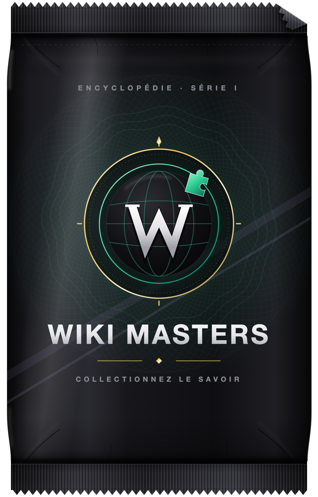
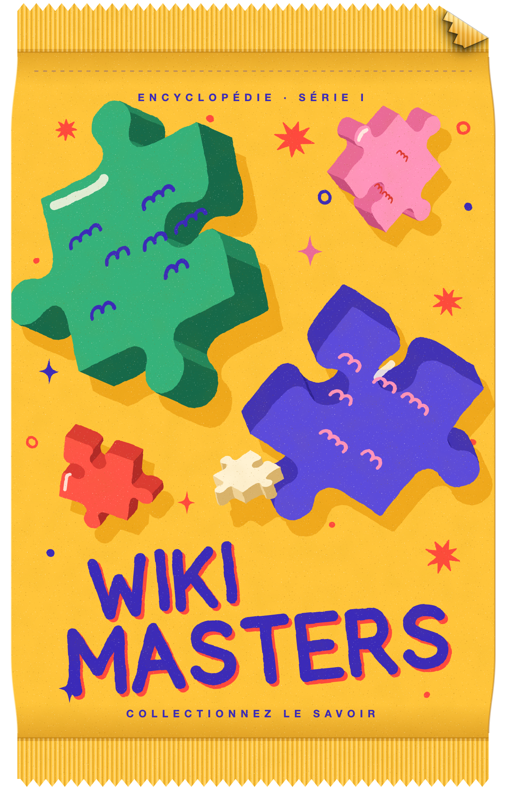
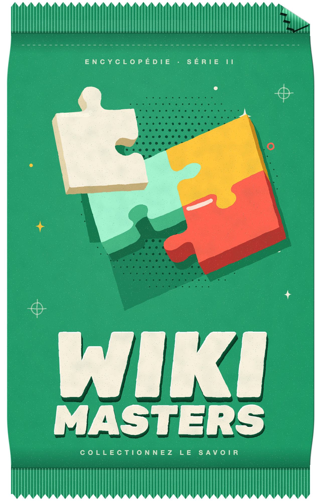
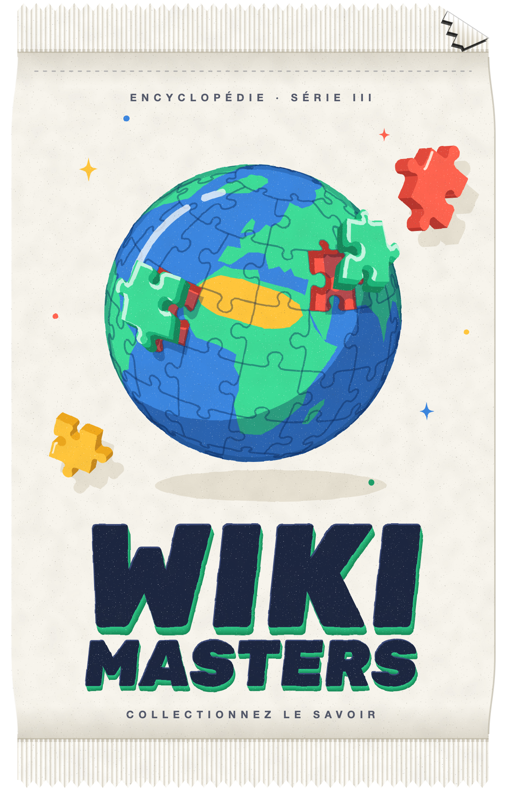

L’extension qui remasterise Wiki Masters
Ouverture en 3D
Découpez le paquet aux ciseaux, la lumière jaillit, les cartes se révèlent une à une.
Cinq designs de paquet
Globe, puzzle, vert, foil sombre ou visuel d’origine, chacun avec ses dos de cartes.
Anti-spoil
Rien ne trahit la rareté avant le retournement.
Collection +
Doublons empilés, vues sur 30 jours et prix estimés sous chaque carte.
Défausse groupée
Les cartes inutiles en un clic, favoris et échanges toujours protégés.
Marché +
Enchères en lot par mots-clés, dans le plafond et le budget que vous fixez.




L
Grande Muraille
fortifications de la frontière nord de la Chine
⚔ 8 970
🛡 6 120
Thème graphite pour tout le site
Tout reste dans votre navigateur
Open source